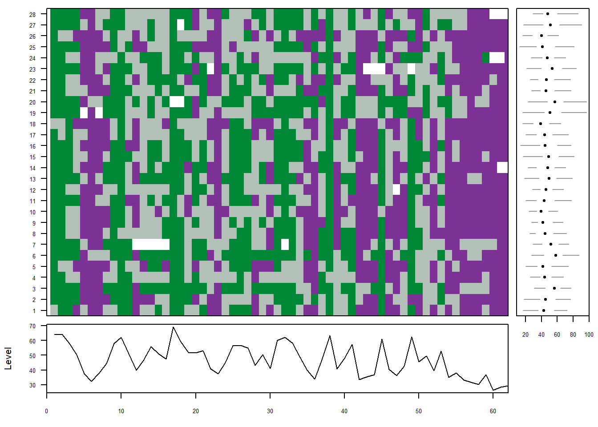
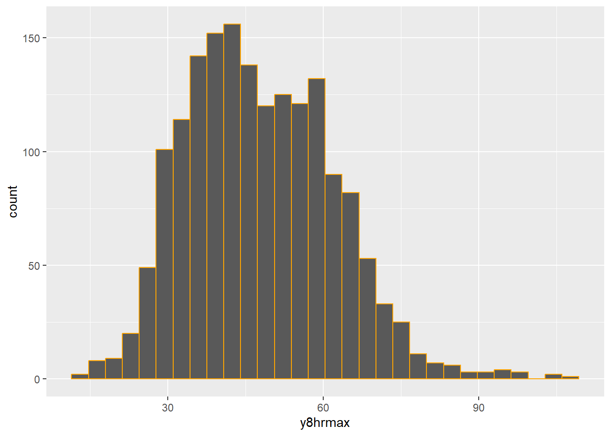

library(tidyverse)
library(mapview)
library(lubridate)
library(mvtsplot)
library(INLA)
library(inlabru)
library(sf)
library(viridis)
library(sp)
library(fmesher)
library(GGally)
library(corrr)Practical 5 - Spatio-temporal model for ozone concentrations in New York
Introduction
In this practical we use a dataset that comprises daily maximum 8-hour average ground level ozone (\(O_3\), ppb) concentrations for the period July 1 and August 31 in 2006 (62 days), measured at 28 monitoring sites in the state of New York, USA.
The stations are part of the Environmental Protection Agency (EPA) monitoring network.
Ozone occurs naturally in the upper atmosphere and protects the Earth from the sun’s rays. However, at ground level it can be harmful for population health, as it can lead to adverse respiratory effects. Ozone is most likely to reach worrisome levels on hot sunny days in urban environments (even if it can still reach high levels during colder months).
In this practical we use R software, and we rely on advanced methods based on the Integrated Nested Laplace Approximation (INLA) combined with the Stochastic Partial Differential Equation (SPDE) approach for Bayesian computation.
The dataset used for this practical is included in the R package spTimer. The data available are as follows:
s.index: index of the monitoring station in the NY state
LongitudeandLatitude: spatial coordinates of the monitoring stations
utmxandutmy: spatial UTM X and UTM Y coordinate of the monitoring stations
Year,MonthandDay; temporal coordinates of the measurements
y8hrmax: daily 8-hour maximum average ozone concentrations (parts per billion)xmaxtemp: daily maximum temperature (in degree Celsius)xwdsp: wind speed (knots),xrh: relative humidity
Of the 1,736 possible observations, i.e., n=28 locations times T=62 daily `o8hrmax` measurements, 24 are missing.
We use y8hrmax concentrations as outcome (i.e. response variable) and xmaxtemp, xwdsp and xrh as predictors. The data frame is named nysptime and is included in the Workspace DataNY.RData. It includes also the grid that will be used to obtain and map the predictions gridnysptime.
For computational reasons in this lab we will work with a subset of the data.
The following packages are required:
Summary of functions to manipulate marginal distribution in the INLA package
New York air pollution data set
The data are obtained from 28 monitoring sites, between July 1 and August 31 in 2006.
- Load the data
load("DataNY.RData")- We create a map of the monitoring station using
mapviewpackage. Here we plot the longitude and latitude using the World Geographic System 1984 (WGS84) projection, which is referenced as European Petroleum Survey Group (EPSG) 4326.
stations = cbind(unique(nysptime[,1]), unique(nysptime[,2:3]))
# set the map projection to a common projection standard such as WGS84 via the argument crs = 4326
mapview(stations, xcol = "Longitude", ycol = "Latitude",
crs = 4326, grid = FALSE)We create a variable
dateusing the packagelubridatejoining together the information about the year, the month and the day.We also use the function
glimpse()from the R packagedplyrto see every column in a data frame.
nysptime = nysptime %>%
mutate(date = make_date(Year, Month, Day))
glimpse(nysptime)Rows: 1,736
Columns: 13
$ s.index <int> 1, 1, 1, 1, 1, 1, 1, 1, 1, 1, 1, 1, 1, 1, 1, 1, 1, 1, 1, 1, …
$ Longitude <dbl> -73.757, -73.757, -73.757, -73.757, -73.757, -73.757, -73.75…
$ Latitude <dbl> 42.681, 42.681, 42.681, 42.681, 42.681, 42.681, 42.681, 42.6…
$ utmx <dbl> 601838.1, 601838.1, 601838.1, 601838.1, 601838.1, 601838.1, …
$ utmy <dbl> 4726140, 4726140, 4726140, 4726140, 4726140, 4726140, 472614…
$ Year <int> 2006, 2006, 2006, 2006, 2006, 2006, 2006, 2006, 2006, 2006, …
$ Month <int> 7, 7, 7, 7, 7, 7, 7, 7, 7, 7, 7, 7, 7, 7, 7, 7, 7, 7, 7, 7, …
$ Day <int> 1, 2, 3, 4, 5, 6, 7, 8, 9, 10, 11, 12, 13, 14, 15, 16, 17, 1…
$ y8hrmax <dbl> 53.88, 57.13, 72.00, 36.63, 42.63, 30.88, 38.25, 42.12, 46.5…
$ xmaxtemp <dbl> 27.85772, 30.11563, 30.00001, 27.89656, 25.65698, 24.61968, …
$ xwdsp <dbl> 5.459953, 8.211767, 4.459581, 3.692225, 4.374314, 4.178086, …
$ xrh <dbl> 2.766221, 3.197750, 3.225186, 4.362334, 3.950320, 3.420533, …
$ date <date> 2006-07-01, 2006-07-02, 2006-07-03, 2006-07-04, 2006-07-05,…- We now plot the concentrations of ozone for each monitoring station using the package
mvtsplot, which allows the visualization of Multivariate time series. To be able to use it, we need to convert the data from long to wide format:
O3 = nysptime %>% select(s.index, y8hrmax, date) # select ozone
O3_wide = O3 %>% pivot_wider(names_from=s.index, values_from=y8hrmax)
O3_wide = O3_wide[,-1] # remove date
O3_wide = data.matrix(O3_wide)
dim(O3_wide)
colnames(O3_wide) = unique(O3[,1])And then plot the daily ozone concentrations for the 28 monitoring stations (Jul 1– Aug 31, 2006) using the package mvtsplot
#Daily ozone levels for 28 monitoring stations, Jul 1– Aug 31, 2006
mvtsplot(O3_wide, group = NULL, xtime = NULL, norm = c("global"),
levels = 3, smooth.df = NULL, margin = TRUE, sort =NULL,
main = "", palette = "PRGn", rowstat = "median", xlim,
bottom.ylim = NULL, right.xlim=NULL, gcol = 3)
Comment: In the plot we use as color PRGn (default) from the RColorBrewer palettes. Here green indicates high values and purple indicates low values. Missing data are denoted by the color white. The bottom panel shows the overall median. Finally, on the right hand side panel, we can see the boxplots of the data in each time series.
- Moreover, we can check the basic statistics for ozone concentrations and make the histogram to check the distribution of the data:
summary(nysptime$y8hrmax) Min. 1st Qu. Median Mean 3rd Qu. Max. NA's
12.38 37.35 46.50 47.82 57.63 107.00 24 nysptime %>%
ggplot()+
geom_histogram(aes(y8hrmax), col="orange")
- We can visualize the relationships between the data using
ggpairs()in theGGallypackage :
ggpairs(nysptime[,9:12]) # print correlations between variables- We print the table of the correlations between ozone and the three predictors using the package
corrr
tab_cor = nysptime %>%
select(y8hrmax, xmaxtemp, xwdsp, xrh) %>%
correlate() %>%
shave(upper = TRUE) %>%
fashion(decimals = 2, na_print = "—")
tab_cor term y8hrmax xmaxtemp xwdsp xrh
1 y8hrmax — — — —
2 xmaxtemp .66 — — —
3 xwdsp .22 .18 — —
4 xrh -.39 -.50 .14 —- Now, we create a variable named
timewhich is an index for time
nysptime$time = rep(1:n_distinct(nysptime$date),
n_distinct(nysptime$s.index))
dim(nysptime) #1736 (28stations*62 days) 14[1] 1736 14- We consider only the first 30 time points for reducing the computational costs
nysptime = nysptime %>% filter(time <= 30)
dim(nysptime) #840 (28stations*30 days) 14[1] 840 14- In order to approximately normally distributed data for the response variable, compute the square root transformation of
y8hrmaxand create a new variable namedsqrty8hrmax, then plot the histogram of data as we did before (NOTE: other suitable data transformation could be taking the natural logarithm of ozone concentrations)
nysptime$sqrty8hrmax = sqrt(nysptime$y8hrmax)
nysptime %>%
ggplot()+
geom_histogram(aes(sqrty8hrmax), col="orange")- We finally import and explore the grid that will be used for the predictions to obtain a continuous surface of ozone concentrations. To do so, we use the data in the
gridnysptimeobject, which contains a total of 6200 rows for 62 days of observations for 10x10 = 100 grid points.
dim(gridnysptime)[1] 6200 11class(gridnysptime)[1] "data.frame"head(gridnysptime) s.index Longitude Latitude utmx utmy Year Month Day xmaxtemp xwdsp
1 1 -72 45.2 735621.3 5009547 2006 7 1 25.78623 5.602757
2 1 -72 45.2 735621.3 5009547 2006 7 2 29.35546 7.946272
3 1 -72 45.2 735621.3 5009547 2006 7 3 28.04157 3.891001
4 1 -72 45.2 735621.3 5009547 2006 7 4 26.55014 3.324329
5 1 -72 45.2 735621.3 5009547 2006 7 5 24.65790 5.221672
6 1 -72 45.2 735621.3 5009547 2006 7 6 23.54229 3.235730
xrh
1 3.311548
2 3.260382
3 2.804062
4 4.459596
5 4.096214
6 3.737357Spatio-temporal model
We implement the spatio-temporal model for ozone concentrations as follows.Let
\(\boldsymbol{Y}_t =(Y(\mathbf{s}_1,t), \dots, Y(\mathbf{s}_n,t))'\) be the observed data at location \(\mathbf{s}\) in day \(t\)
\(\boldsymbol{O}_t =(O(\mathbf{s}_1,t), \dots, O(\mathbf{s}_n,t))'\) be the true value corresponding to \(\boldsymbol{Y}_t\).
We use a hierarchical structure and we fit the following Bayesian model, with nugget effect model together with an independent Gaussian Process (GP) model at each time point:
\[ \begin{aligned} \boldsymbol{Y}_t &= \boldsymbol{O}_t + \boldsymbol{\epsilon}_t \\ \boldsymbol{O}_t &= \boldsymbol{X}_t \boldsymbol{\beta} + \boldsymbol{\omega}_t \end{aligned} \]
where:
\(\boldsymbol{X}_t\) are the predictor values and \(\boldsymbol{\beta}\) are the regression coefficients (i.e. large-scale component)
\(\boldsymbol{\omega}_t\) refers to the latent spatio-temporal process , which changes in time with first order autoregressive dynamics and spatially correlated innovations as seen in Session 7
\(\boldsymbol{\epsilon}_t=(\epsilon(\mathbf{s}_1,t), \dots, \epsilon(\mathbf{s}_n,t))'\) is the nugget effect or the pure error term, independent in space and time.
The model we are going to implement is a separable model similar to the one described in Cameletti et al 2013 https://link.springer.com/article/10.1007/s10182-012-0196-3
Remember that a spatio-temporal model is said to be separable when the space-time covariance structure can be decomposed into a spatial and a temporal term, i.e., the spatio-temporal covariance can be expressed as a Kronecker product of a spatial and a temporal covariance.
Cross-validation
Prediction at the hold-out validation sites: k-fold cross-validation
We implement a k-fold cross-validation at the sensor level taking k=5, that is we split the data in k = 5 groups of sites to obtain 5 training sets and 5 validation (or test) sets.
To make the process reproducible, we will set a seed: set.seed(23)
We ensure that all measurements from the same sensor (s.index) belong to the same fold. The fold assignments are then merged back into the main dataset to label each observation with its corresponding fold.
set.seed(23)
# Prepare fold assignment: we use 's.index' as sesonr ID
stations <- unique(nysptime$s.index)
folds <- cut(seq_along(stations), breaks = 5, labels = FALSE)
station_folds <- data.frame(s.index = stations,
fold = sample(folds))
# Remove previous 'fold' column if it exists
if ("fold" %in% names(nysptime)) {
nysptime$fold <- NULL
}
# Now merge fold assignment back into main dataset
nysptime <- merge(nysptime, station_folds, by = "s.index")Now, we initialize the vectors to store performance metrics: root mean sqyared error (RMSE), mean absolute error (MAE), Bias, the coefficient of correlation between observed and predicted and the squared coefficient of correlation:
rmse_vec <- c()
mae_vec <- c()
bias_vec <- c()
r_vec <- c()
rsq_vec <- c()We now start the cross-validation loop, where we walk through all the steps of an INLA-SPDE analysis. This section is intentionally kept with minimal comments, as each step will be explained in detail later, when we perform prediction over the full grid.
At the end of the loop, we will evaluate model performance using the standard metrics specified, namely RMSE, MAE, bias, and correlation.
# Start cross-validation loop
for (i in 1:5) {
cat("Fold", i, "\n")
# Split into training and validation sets
training.data <- nysptime[nysptime$fold != i, ]
validation.data <- nysptime[nysptime$fold == i, ]
coords_train = unique(training.data[c("Longitude", "Latitude")]) # coordinates for each station
# Build the mesh
boundary = inla.nonconvex.hull(as.matrix(coords_train[,1:2]))
mesh = inla.mesh.2d(boundary = boundary, max.edge = c(0.8, 1.3),
cutoff = 0.1, offset = 0.5)
# Define SPDE model with prior assumptions (PC priors)
spde <- inla.spde2.pcmatern(mesh = mesh,
prior.range = c(2, 0.5),
prior.sigma = c(1, 0.01))
# Build index set and projection matrix for training set
n_days = length(unique(training.data$time))
n_spatial.cv = mesh$n
s_index = inla.spde.make.index(
name = "spatial.field",
n.spde = n_spatial.cv, # or n.spde = spde$n.spde
n.group = n_days)
coordinates.alldays.cv = training.data[c("Longitude", "Latitude")] %>% as.matrix()
A_train = inla.spde.make.A(mesh = mesh,
loc = coordinates.alldays.cv,
group = training.data$time,
n.group = n_days)
# Build ithe syack for the estimation part
stk_est = inla.stack(
data = list(y = training.data$sqrty8hrmax),
A = list(A_train, 1),
effects=list(c(s_index,
list(Intercept=1)),
list(training.data[,10:12])),
tag="est")
# Specify coordinates of the validation set
coords_valid = validation.data[c("Longitude", "Latitude")]
groupp = validation.data[, 14]
# Create projection matrix A matrix for prediction locations (validation set)
A_valid = inla.spde.make.A(
mesh = mesh,
loc = as.matrix(coords_valid),
group = groupp,
n.group = n_days)
dim(A_valid)
# Define the stack for the prediction locations (validation set)
stk_pred = inla.stack(
data = list(y = NA),
A = list(A_valid, 1),
effects=list(c(s_index, #Spatial field
list(Intercept=1)),
list(validation.data[,10:12])),
tag="pred")
# Final stack containing the estimation and prediction stacks
stk = inla.stack(stk_est, stk_pred)
# Prior for rho parameter
rho_hyper = list(theta = list(prior = "pccor1", param = c(0, 0.9)))
# Define model formula
formula.cv = y ~ -1 + Intercept + xmaxtemp + xwdsp + xrh +
f(spatial.field,
model = spde,
group = spatial.field.group,
control.group = list(model = "ar1",
hyper=rho_hyper))
# Run INLA again for prediction at validation locations
result_valid = inla(
formula.cv,
data = inla.stack.data(stk, spde = spde),
family = "gaussian",
control.predictor = list(A = inla.stack.A(stk),
compute = TRUE),
control.compute = list(return.marginals.predictor = TRUE))
# Extract predicted values at validation locations
idx <- inla.stack.index(stk, tag = "pred")$data
pred <- result_valid$summary.linear.predictor[idx, "mean"]
obs <- validation.data$sqrty8hrmax
# Compute the performace metrics
rmse_vec[i] <- sqrt(mean((obs - pred)^2, na.rm = TRUE))
mae_vec[i] <- mean(abs(obs - pred), na.rm = TRUE)
bias_vec[i] <- mean(pred - obs, na.rm = TRUE)
r_vec[i] <- cor(pred, obs, use = "complete.obs")
rsq_vec[i] <- r_vec[i]^2
}Fold 1
Fold 2
Fold 3
Fold 4
Fold 5 Finally we print the performance metrics!
# Print average performance across folds
cat("Mean RMSE:", round(mean(rmse_vec), 3), "\n")Mean RMSE: 0.456 cat("Mean MAE:", round(mean(mae_vec), 3), "\n")Mean MAE: 0.363 cat("Mean Bias:", round(mean(bias_vec), 3), "\n")Mean Bias: -0.031 cat("Mean R:", round(mean(r_vec), 3), "\n")Mean R: 0.873 cat("Mean R²:", round(mean(rsq_vec), 3), "\n")Mean R²: 0.763 Exercise
Repeat the 5-fold cross-validation procedure excluding covariates from the model. Compare the performance metrics (RMSE, MAE, bias, correlation).
Which model performs better: with or without covariates?
Run the model on the entire data set to obtain predictions for ozone on the grid
We now repeat all the same process to implement the full model, but using the entire data set, i.e. nysptime and obtaining daily predictions of ozone on the entire domain.
- Create the mesh and the SPDE model
Now we create a triangulation of our domain. First we establish the boundary of the domain with the function inla.nonconvex.hull, then we create the mesh with inla.mesh.2d function, as we did before, but using all the data from the New York stations (i.e. nysptime). Create the new mesh as we did before, and call it as mesh
coords = unique(nysptime[c("Longitude", "Latitude")]) # coordinates for each stationboundary = inla.nonconvex.hull(as.matrix(coords[,1:2]))
mesh = inla.mesh.2d(boundary = boundary, max.edge = c(0.8, 1.5), cutoff = 0.1, offset = 0.5)Now plot the mesh with the 28 station points. To do so, we use the gg() function from the inlabru package
ggplot() +
gg(mesh) +
geom_point(data = coords, aes(Longitude, Latitude)) Given the mesh, it is now possible to create the SPDE model using the inla.spde2.matern function or inla.spde2.pcmatern. Here we use PC priors
spde = inla.spde2.pcmatern(mesh = mesh, alpha = 2,
prior.range = c(1, 0.01), # p(range < 1) = 0.01
prior.sigma = c(2, 0.01)) # p(sigma > 2) = 0.01
spde$n.spde #n. of mesh vertices[1] 240- Create the index set
n_days = length(unique(nysptime$time))
n_spatial = mesh$n
s_index = inla.spde.make.index(
name = "spatial.field",
n.spde = n_spatial, # or n.spde = spde$n.spde
n.group = n_days)The s_index contains two important items:
(i) the spatial.field index, which runs from 1 to n_spatial for n_days times,
(ii) the spatial.field.group, which runs from 1 to n_days, with each element replicated n_spatial times.
- Create the Projection Matrix
Create the projection matrix using the function inla.spde.make.A function. Remember that this function takes as arguments the mesh, the measurement locations loc, the measurement group (here day), the number of groups. Call the projector matrix for the estimation A_est
coordinates.alldays = nysptime[c("Longitude", "Latitude")] %>% as.matrix()
A_est = inla.spde.make.A(mesh = mesh,
loc = coordinates.alldays,
group = nysptime$time,
n.group = n_days)Now, check the dimension of the projector matrix
dim(A_est) [1] 840 7200nrow(nysptime) [1] 840length(s_index$spatial.field) [1] 7200We see that the matrix A is equal in dimension to number of observations x number of indices of our basis functions in space and time.
- Define the Stacks for estimation and prediction
First, we define the stack for the estimation part. Call it stack_est
stack_est = inla.stack(
data = list(y = nysptime$sqrty8hrmax),
A = list(A_est, 1),
effects=list(c(s_index,
list(Intercept=1)),
list(nysptime[,10:12])),
tag="est")Then, we need to define the stack for the prediction part, but first we displays the grid points together with the mesh:
gridnysptime %>%
distinct(Longitude, Latitude) %>%
ggplot()+
geom_point(aes(Longitude, Latitude)) +
gg(mesh)Then, we create also for gridnysptime the variable containing the date information and then a variable which is an index for time:
gridnysptime = gridnysptime %>%
mutate(date = make_date(Year, Month, Day))
gridnysptime$time = rep(1:n_distinct(gridnysptime$date),
n_distinct(gridnysptime$s.index))
glimpse(gridnysptime)Rows: 6,200
Columns: 13
$ s.index <int> 1, 1, 1, 1, 1, 1, 1, 1, 1, 1, 1, 1, 1, 1, 1, 1, 1, 1, 1, 1, …
$ Longitude <dbl> -72, -72, -72, -72, -72, -72, -72, -72, -72, -72, -72, -72, …
$ Latitude <dbl> 45.2, 45.2, 45.2, 45.2, 45.2, 45.2, 45.2, 45.2, 45.2, 45.2, …
$ utmx <dbl> 735621.3, 735621.3, 735621.3, 735621.3, 735621.3, 735621.3, …
$ utmy <dbl> 5009547, 5009547, 5009547, 5009547, 5009547, 5009547, 500954…
$ Year <int> 2006, 2006, 2006, 2006, 2006, 2006, 2006, 2006, 2006, 2006, …
$ Month <int> 7, 7, 7, 7, 7, 7, 7, 7, 7, 7, 7, 7, 7, 7, 7, 7, 7, 7, 7, 7, …
$ Day <int> 1, 2, 3, 4, 5, 6, 7, 8, 9, 10, 11, 12, 13, 14, 15, 16, 17, 1…
$ xmaxtemp <dbl> 25.78623, 29.35546, 28.04157, 26.55014, 24.65790, 23.54229, …
$ xwdsp <dbl> 5.6027574, 7.9462719, 3.8910009, 3.3243287, 5.2216721, 3.235…
$ xrh <dbl> 3.311548, 3.260382, 2.804062, 4.459596, 4.096214, 3.737357, …
$ date <date> 2006-07-01, 2006-07-02, 2006-07-03, 2006-07-04, 2006-07-05,…
$ time <int> 1, 2, 3, 4, 5, 6, 7, 8, 9, 10, 11, 12, 13, 14, 15, 16, 17, 1…For the sake of simplicity we consider here only the first time point:
gridnysptime = gridnysptime %>% filter(time == 1)We construct a stack containing the matrices and vector defining the model at the prediction locations. To do so, we construct the matrix A_pred that projects the GMRF from the prediction locations to the mesh nodes. We specify the prediction locations as coords_grid. We will make predictions at day 1:
coords_grid = gridnysptime[c("Longitude", "Latitude")]
# define prediction day
i_day = 1
which_date = unique(nysptime$date)[i_day]
print(paste("* You will get a prediction for ", which_date, "*"))[1] "* You will get a prediction for 2006-07-01 *"# Create A matrix for grid prediction
A_pred = inla.spde.make.A(
mesh = mesh,
loc = as.matrix(coords_grid),
group = i_day,
n.group = n_days)
dim(A_pred)[1] 100 7200Finally, we create the stack for the predictions and the joint stack. Call the stack for the predictions as stack_pred and the full stack as stack
# stack for prediction part
stack_pred = inla.stack(
data = list(y = NA),
A = list(A_pred, 1),
effects=list(c(s_index, #Spatial field
list(Intercept=1)),
list(gridnysptime[,9:11])),
tag="pred")# Final stack containing the estimation and prediction stacks
stack = inla.stack(stack_est, stack_pred)- Run INLA
Now, we are ready to fit complete the model. We specify a PC prior on the AR(1) coefficient $\rho$, such that \(p(\rho>0=0.9)\) as we did for the cross-validation task
# prior for AR(1) coefficient
rho_hyper = list(theta = list(prior = "pccor1", param = c(0, 0.9)))Define the formula, including the intercept, 3 linear effects of the meteorological covariates and the spatio-temporal field (with AR(1) temporal dynamics):
# formula
formula = y ~ -1 + Intercept + xmaxtemp + xwdsp + xrh +
f(spatial.field,
model = spde,
group = spatial.field.group,
control.group = list(model = "ar1",
hyper=rho_hyper))
# fit the model
fit = inla(
formula,
data = inla.stack.data(stack, spde = spde),
family = "gaussian",
control.predictor = list(A = inla.stack.A(stack),
compute = TRUE),
control.compute = list(return.marginals.predictor = TRUE)) Results
- First we check a summary of the results
summary(fit)Time used:
Pre = 0.407, Running = 34.8, Post = 17.1, Total = 52.4
Fixed effects:
mean sd 0.025quant 0.5quant 0.975quant mode kld
Intercept 1.001 1.319 -1.573 0.995 3.611 0.995 0
xmaxtemp 0.223 0.036 0.151 0.223 0.294 0.223 0
xwdsp 0.053 0.032 -0.010 0.053 0.116 0.053 0
xrh -0.078 0.107 -0.288 -0.078 0.132 -0.078 0
Random effects:
Name Model
spatial.field SPDE2 model
Model hyperparameters:
mean sd 0.025quant 0.5quant
Precision for the Gaussian observations 12.825 1.231 10.575 12.766
Range for spatial.field 2.915 0.351 2.295 2.890
Stdev for spatial.field 0.966 0.109 0.777 0.957
GroupRho for spatial.field 0.799 0.048 0.695 0.803
0.975quant mode
Precision for the Gaussian observations 15.417 12.646
Range for spatial.field 3.676 2.835
Stdev for spatial.field 1.205 0.935
GroupRho for spatial.field 0.883 0.809
Marginal log-Likelihood: -608.42
is computed
Posterior summaries for the linear predictor and the fitted values are computed
(Posterior marginals needs also 'control.compute=list(return.marginals.predictor=TRUE)')- Wecan explore the output names as follows
names(fit$marginals.fixed)[1] "Intercept" "xmaxtemp" "xwdsp" "xrh" names(fit$marginals.random)[1] "spatial.field"names(fit$marginals.hyperpar)[1] "Precision for the Gaussian observations"
[2] "Range for spatial.field"
[3] "Stdev for spatial.field"
[4] "GroupRho for spatial.field" - Extract the posterior summaries (mean and 95% credible intervals) for the fixed effects only and comment the results
# Fixed effects
round(fit$summary.fixed[,c("mean","0.025quant","0.975quant")],3) mean 0.025quant 0.975quant
Intercept 1.001 -1.573 3.611
xmaxtemp 0.223 0.151 0.294
xwdsp 0.053 -0.010 0.116
xrh -0.078 -0.288 0.132Comment:
Using a subset of the New York data (only first 30 days are included), we see that the parameter estimates show that the max temperature has an impact on ozone concentrations, since the 95% credible intervals of the regression coefficients doesn’t contain zero.
- Now we plot the posterior densities for the fixed effects
modfix = fit$summary.fixed
modfix mean sd 0.025quant 0.5quant 0.975quant mode
Intercept 1.00116051 1.31873540 -1.57253452 0.99485642 3.6110997 0.99496469
xmaxtemp 0.22281345 0.03645619 0.15059430 0.22302163 0.2938407 0.22301966
xwdsp 0.05329022 0.03192028 -0.00977121 0.05342221 0.1156041 0.05342317
xrh -0.07785969 0.10684724 -0.28758460 -0.07792685 0.1322323 -0.07793098
kld
Intercept 1.413764e-08
xmaxtemp 1.352616e-08
xwdsp 7.931920e-09
xrh 6.456615e-09par(mgp=c(2.2,0.45,0), tcl=-0.4, mar=c(3.3,4,2,2))
par(mfrow=c(2,2))
plot(fit$marginals.fix[[1]],type ='l',xlab=expression(beta[0]),ylab="density")
abline(v = modfix[1, c(3, 5)], lty=2)
plot(fit$marginals.fix[[2]],type ='l',xlab=expression(beta[max.temp]),ylab="density")
abline(v = modfix[2, c(3, 5)], lty=2)
plot(fit$marginals.fix[[3]],type ='l',xlab=expression(beta[w.speed]),ylab="density")
abline(v = modfix[3, c(3, 5)], lty=2)
plot(fit$marginals.fix[[4]],type ='l',xlab=expression(beta[rh]),ylab="density")
abline(v = modfix[4, c(3, 5)], lty=2)- Now we check the posterior estimates of the hyperparameters. Obtain their posterior summaries, and call the object as
modhy
# Hyperparameters
modhy = fit$summary.hyperpar
modhy mean sd 0.025quant
Precision for the Gaussian observations 12.8248846 1.23089087 10.5749026
Range for spatial.field 2.9146406 0.35108202 2.2952407
Stdev for spatial.field 0.9659951 0.10873459 0.7774822
GroupRho for spatial.field 0.7992096 0.04808633 0.6948142
0.5quant 0.975quant mode
Precision for the Gaussian observations 12.7655072 15.4167419 12.6463022
Range for spatial.field 2.8901974 3.6756229 2.8351177
Stdev for spatial.field 0.9573966 1.2048430 0.9351710
GroupRho for spatial.field 0.8029473 0.8826979 0.8086205- We extract field, parameter values and distributions for the spatial field using the
inla.spde2.resultfunction. Here, thedo.tranf = TRUEmakes sure that marginals are calculated in the same scale as the data
output.field = inla.spde2.result(inla = fit,
name = "spatial.field",
spde = spde,
do.transf = TRUE)- We plot the posterior estimates for the parameter of the AR(1) model (coefficient $\rho$), the range that provides the distance value (in the unit of the point coordinates) above which spatial dependencies become negligible and the variance
out.range = exp(output.field$summary.log.range.nominal)
out.var = exp(output.field$summary.log.variance.nominal)
par(mgp=c(2.2,0.45,0), tcl=-0.4, mar=c(3.3,4,2,2))
par(mfrow=c(2,2))
# AR1 parameter
plot(fit$marginals.hyperpar$`GroupRho for spatial.field`,type = 'l',xlab = expression(rho),ylab = "density", xlim=c(0.6,1))
# range
plot(output.field$marginals.variance.nominal[[1]],type = 'l',xlab = expression(sigma^2),ylab = "density")
# variance
plot(output.field$marginals.range.nominal[[1]],type = 'l',xlab = "spatial range",ylab = "density")- We check the correlation between the data response and the posterior mean of the predicted values
# index for the random field at the data locations:
idat = inla.stack.index(stack_est, 'est')$data
# correlation between the data response and the posterior mean of the predicted values
cor(nysptime$sqrty8hrmax, fit$summary.linear.predictor$mean[idat], use="complete.obs")[1] 0.9747155# plot
plot(nysptime$sqrty8hrmax, fit$summary.linear.predictor$mean[idat])- Map of the predictions at grid level
We now extract the indices to the prediction nodes and then extract the posterior mean of the response at day 1. To do so, we use inla.stack.index() function to get the indices of stack that correspond to tag = "pred"
# Get the posterior mean values
index.pred = inla.stack.index(stack, "pred")$data
post.mean.pred = fit$summary.linear.predictor[index.pred,"mean"]
post.sd.pred = fit$summary.linear.predictor[index.pred,"sd"]
# prepare posteriors for mapping
post.mean.df = SpatialPixelsDataFrame(SpatialPoints(coords_grid),
data = data.frame(post.mean.pred))
postsd.df = SpatialPixelsDataFrame(SpatialPoints(coords_grid),
data = data.frame(post.sd.pred))Finally we present the map of the ozone concentration posterior mean (on the square root scale) and of the prediction standard deviation:
# posterior mean
ggplot() +
gg(post.mean.df, aes(Longitude, Latitude, fill = post.mean.pred)) + ggtitle("Posterior mean at 2006-07-01") +
# scale_fill_viridis() +
coord_equal()+
geom_point(data = coords, aes(Longitude, Latitude)) +
scale_fill_gradient(
low = "blue", high = "orange") +
theme_bw()# posterior standard deviation
ggplot() +
gg(post.mean.df, aes(Longitude, Latitude, fill = post.sd.pred)) + ggtitle("Posterior SD at 2006-07-01") +
#scale_fill_viridis() +
coord_equal()+
geom_point(data = coords, aes(Longitude, Latitude)) +
scale_fill_gradient(
low = "blue", high = "orange") +
theme_bw()